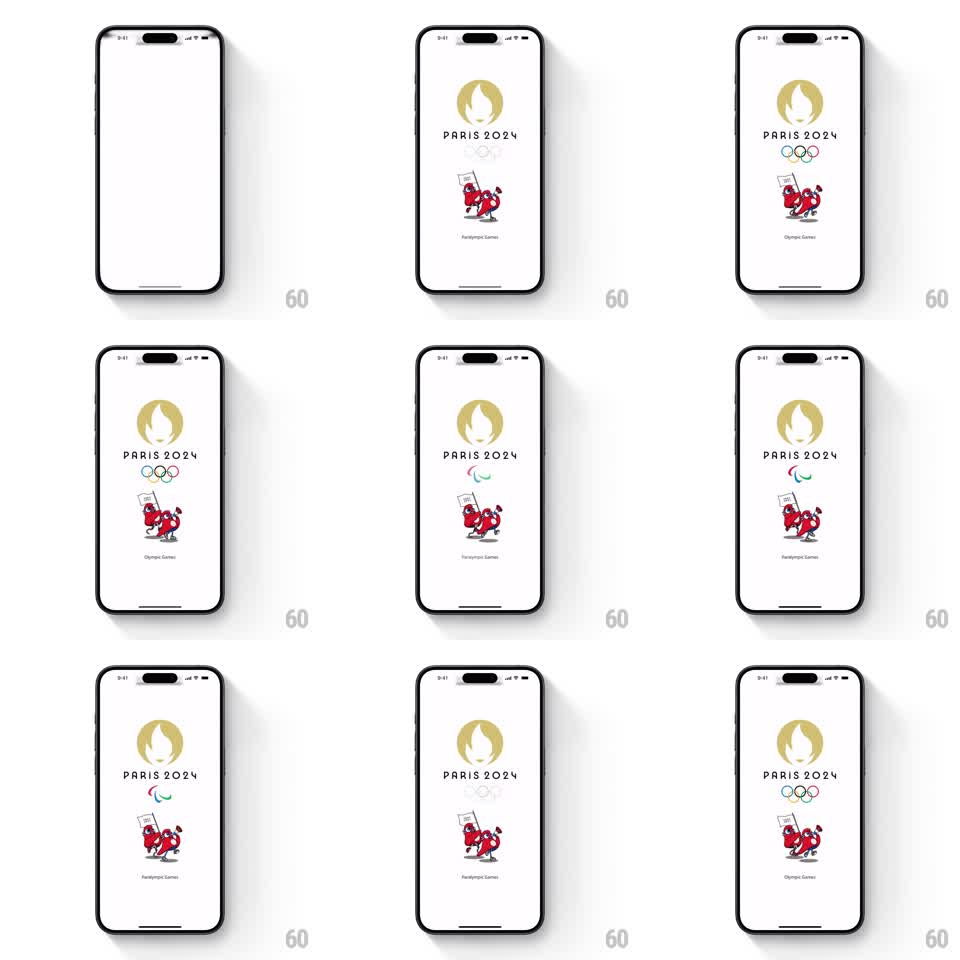

Media
Frame-by-frame

Rebuild this animation 1:1: the Olympics app's Paris 2024 splash - a white screen that loops a seamless crossfade between Olympic and Paralympic branding: gold flame emblem, alternating rings/agitos symbols, and the red Phryge mascots.

Rebuild this animation 1:1: the Olympics app's Paris 2024 splash - a white screen that loops a seamless crossfade between Olympic and Paralympic branding: gold flame emblem, alternating rings/agitos symbols, and the red Phryge mascots. ## Integration Integration: stack-agnostic spec - springs given as stiffness/damping, timed motions as duration + curve; map every value to your framework and animation library of choice. ## Scene White background. Top-center: the gold Paris 2024 flame emblem over "PARIS 2024" in spaced caps. Below: a symbol slot that alternates between the five Olympic rings and the Paralympic agitos. Bottom: the two red Phryge mascot characters with a caption that alternates "Olympic Games" / "Paralympic Games". ## Motion spec Pattern: looping two-state brand crossfade. - Elements fade in on load in order: emblem (500ms), wordmark (400ms), symbol slot (400ms), mascots (500ms) - short 100ms staggers. - The loop: every ~2.5s the symbol slot crossfades (800ms) between rings and agitos while the caption crossfades in sync. - The mascots gently bob (translateY +-4px, 2.4s sine, offset between the two characters) throughout. - The emblem and wordmark stay constant - only the symbol and caption alternate. - Crossfades overlap slightly at midpoint so neither state fully disappears (no blink to empty). ## Calibration - The alternation is the whole point: equal dwell time on Olympic and Paralympic states. - Keep motion amplitude tiny - this is a splash, not a celebration. ## Reduced motion Hold on the Olympic state; no alternation or bob. ## Don't miss - The caption swap is part of the crossfade pair - symbol and text must never disagree. - Mascots overlap slightly at the base and lean toward each other; keep their composition fixed while they bob.